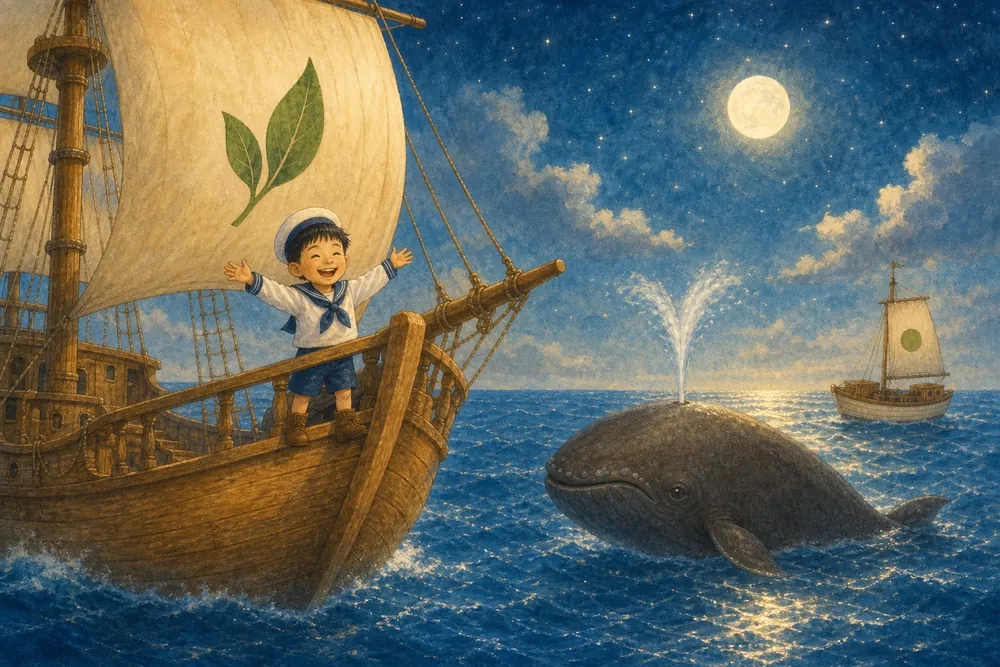

ORT Level 6 · Nathan Evans · Wellerman
Tap a card: hear the word, then an example from the song
Nathan Evans · Wellerman · needs the internet
If the video does not load, check the internet and try again.